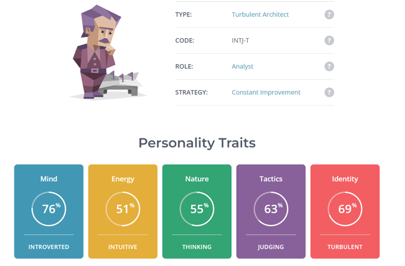
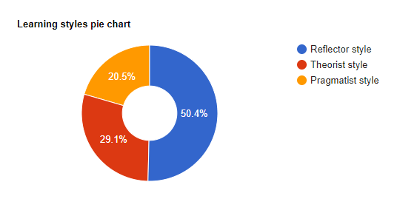
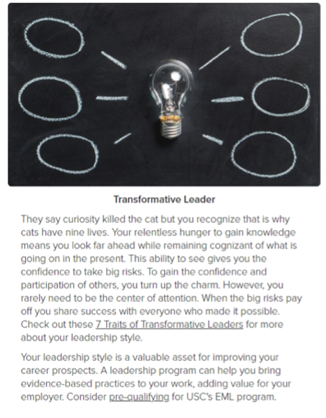

According to Myers-Briggs Type Indicator I am an architect. This means that I am very introverted, but I think rationally and not based on my emotions. The learning style test also says that I am a reflector which means that I tend to be cautious and likes to collect and analyse information, I’m also a transformative leader which means that I am hunger for knowledge and this may come as an advantage for me because that means that I would like to improve my work more and better. These results mean that my decisions making are heavily influence by rationality and not based on emotions.
From the results, it indicates that I am an introvert which demonstrate I am not very likely interacting with others, but my personality allows me to think rationally which is good for jobs like data scientist because a lot of the works are based on facts and evidence and not make decision based on my emotions. I’m also hungry for knowledge as well as a perfectionist, meaning that I strive to improve myself and pushes the team to perfects the works. Although the decisions that I will make are rational, when people fail to meet my expectations or restraints it is said that I would be overly critical which may come off as rude and disrespectful, this is also due to the fact that I am arrogant and dismissive of emotions which may impact my relationship with my colleague when working as a team.
When forming a team in a workplace, what I need to look out for is my behaviours and opinions as I may be overly critical and this charisma of mine may put a lot of my teammates off. In order to work efficiently and effectively with my team, I need to take account of other’s emotion and not just fully rely on rationality and facts as it will result in my teammates thinking that their opinions are not valued by me, and everyone is the team would have hard time and work could not be done because we won’t be able to come to common ground.
The results provided by these tests are valid to a certain degree, but there are still parts that I find that it is not true for me. I do agree that my opinion can be overly critical but that doesn’t mean that I won’t take account of others’ emotions and not just based on the idea that rationality is king. The test also say that I will make a good leader, but I find that to be incorrect. I am shy and introverted and not good at interacting with others so I would not think that I am good at leading others. The results are only partially accurate, and some parts are not.
  